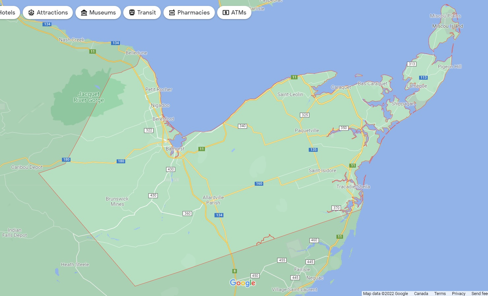

Gloucester County is located in the northeastern corner of New Brunswick, Canada, with a population of 78,444. The county's main industries are fishing, mining, and forestry.
Gloucester County
History
In 1826, Gloucester County was separated from Northumberland County. It is situated in New Brunswick's northeastern corner. The parishes of Saumarez and Beresford in Northumberland County were established in 1814. In 1826, Beresford was merged with Bathurst to form Bathurst. Saumarez gave birth to New Bandon and Caraquet in 1831, Shippagan to Saumarez in 1851, and Inkerman to Saumarez in 1855. Saumarez and Inkerman were combined to form Saint Isidore in 1881. Paquetville was founded in 1897 from Inkerman and Caraquet, and Allardville was founded in 1946 from Bathurst.
Census Profile (2016)
Populated Places
| Official Name | Designation | Area km2 | Population | Parish |
|---|---|---|---|---|
| Bathurst | City | 92.04 | 11,897 | Bathurst |
| Tracadie-Sheila | Town (dissolved) | 24.65 | 5,171 | Saumarez |
| Beresford | Town | 19.41 | 4,288 | Beresford |
| Caraquet | Town | 68.35 | 4,248 | Caraquet |
| Shippagan | Town | 10.02 | 2,580 | Shippagan |
| Petit-Rocher | Village | 4.52 | 1,897 | Beresford |
| Belledune | Village | 189.47 | 1,417 | Beresford |
| Bas-Caraquet | Village | 31.01 | 1,305 | Caraquet |
| Lameque | Town | 12.51 | 1,285 | Shippagan |
| Bertrand | Village | 57.44 | 1,166 | Caraquet |
| Nigadoo | Village | 7.65 | 963 | Beresford |
| Grande-Anse | Village | 24.33 | 899 | New Bandon |
| Pointe-Verte | Village | 13.79 | 886 | Beresford |
| Sainte-Marie-Saint-Raphael | Village | 15.90 | 879 | Shippagan |
| Le Goulet | Village | 5.49 | 793 | Shippagan |
| Saint-Isidore | Village | 22.94 | 764 | Saint-Isidore |
| Paquetville | Village | 9.26 | 720 | Paquetville |
| Saint-Leolin | Village | 19.73 | 647 | New Bandon |
| Maisonnette | Village | 12.90 | 495 | New Bandon |
Map
Clickable areas are as follows (Click on each item to see the location on the map):
